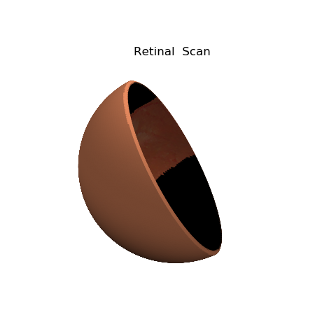

Figure View_init() Reset¶
Based on the static plot from the Function and Image Mapping example. Animation control:
| Visualization | Frame Value |
|---|---|
| Surface geometry | constant |
| Surface position | fixed to the coordinate axis |
| Surface color | constant |
| Shading and highlighting | fixed to the coordinate axis |
| Axis coordinate | azim per frame using view_init |
Changing only the axis coordinate results in ‘stationary object’ perception.
import numpy as np
from matplotlib import pyplot as plt
from matplotlib.animation import FuncAnimation
import matplotlib.animation as animation
import s3dlib.surface as s3d
import s3dlib.cmap_utilities as cmu
#.. Retinal Scan Animation
# 1. Define functions to examine ....................................
def collapse( rtp) :
r,t,p = rtp
T = np.where(t>np.pi,t,-t)
R = np.where(t>np.pi,r+0.03,r)
return R,T,p
def azim( time ) :
min, max = 0, 170
middle = (max+min)/2.0
hilo = (max-min)/2.0
return middle - hilo*np.cos(time*2*np.pi)
# 2. Setup and map surfaces .........................................
start_azim_time = 0
rez=6
cmap = cmu.binary_cmap(negColor='black' ,posColor=[0.918,0.549,0.377])
imagefilename = 'data/retinalScan_18_5.png'
vp = [0.0,0.361,0.5,0.639]
eye = s3d.SphericalSurface(rez,basetype='octa')
eye.map_cmap_from_op( lambda rtp : rtp[1] ,cmap=cmap)
eye.map_color_from_image(imagefilename,viewport=vp)
eye.map_geom_from_op(collapse)
eye.shade(direction=[0,1,1],contrast=0.5)
eye.transform(rotate=s3d.eulerRot(0,30))
# 3. Construct figures, add surfaces, and plot ......................
fig = plt.figure(figsize=plt.figaspect(1) )
ax = plt.axes(projection='3d')
minmax = (-0.75,0.75)
ax.set(xlim=minmax, ylim=minmax, zlim=minmax)
ax.set_title('Retinal Scan')
ax.set_axis_off()
ax.view_init( elev=30, azim=azim(start_azim_time) )
ax.add_collection3d(eye)
# 4. Animation ......................................................
def init_fig():
return eye,
def update_fig(frame):
global eye
ax.collections.remove(eye)
ax.view_init(elev=30, azim=azim(frame) )
ax.add_collection3d(eye)
return eye,
ani = FuncAnimation(fig, update_fig, frames=np.linspace(0.0, 1.0, 60),
init_func=init_fig, blit=False, repeat=True, interval=100)
print(">>>>>>>>>>>>>>> Animation completed, file save proceeds")
#ani.save('ZZZ.mp4') # use for movie file.
ani.save(None,writer=animation.FFMpegFileWriter()) # use for temp files.
print(">>>>>>>>>>>>>>> Save completed, screen display proceeds")
#plt.show()
print(">>>>>>>>>>>>>>> process completed")